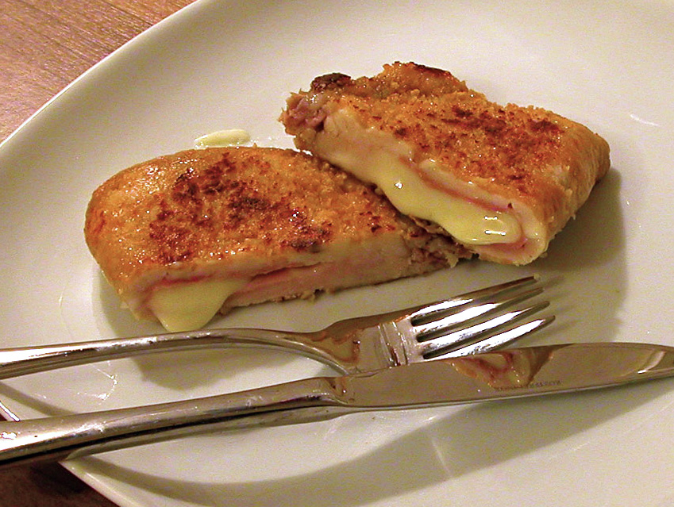

Home
Cordon Bleu

Description
A perfect Cordon Bleu – a juicy schnitzel with a delicate cheese-and-ham filling and a crispy breadcrumb coating.
Ingredients:
- plastic wrap
- 4 Veal cutlets, sliced open for filling.
- Salt
- Pepper
Filling:
- 4 slices of Gruyère AOP, 4x9 cm, each approx. 30 g
- 4 slices of ham
Breading:
- 2–3 tbsp flour
- 100 g breadcrumbs
- 1 egg
- 1 tbsp milk
- Frying butter or frying cream
- 1 lemon, cut into wedges
Steps
Recipe Infos
- Preparation time: 20 minutes
- Cooking/Baking time: 8 minutes
- Ready in: 28 minutes
Instructions
- Lay the veal cutlets flat on plastic wrap, cover with another layer of plastic
wrap, and roll them out to 2–3 mm thin using a rolling pin or flatten them
with a meat mallet. Remove the plastic wrap and season the meat.
- Wrap each slice of cheese with a slice of ham and place it on the lower half of
the cutlet, leaving a 2–3 cm border around the edges. Fold the other half of
the cutlet over the filling and press the edges firmly to seal, squeezing out
any air.
- Breading: Place flour and breadcrumbs in separate plates. Whisk the egg
with the milk in another plate.
- Just before frying, coat the stuffed cutlets first in flour, shaking off any
excess. Then dip them in the egg mixture and finally coat them in
breadcrumbs, pressing firmly to adhere.
- Fry the cordon bleu in batches over medium heat in sufficient frying butter,
about 4–5 minutes on each side, until crispy and golden brown.
Serve with lemon wedges.
If needed, keep warm in an oven preheated to 60–80°C with the door slightly open.